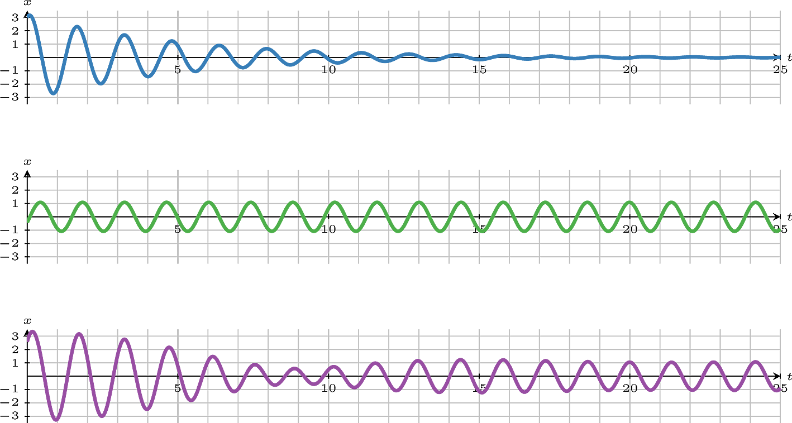
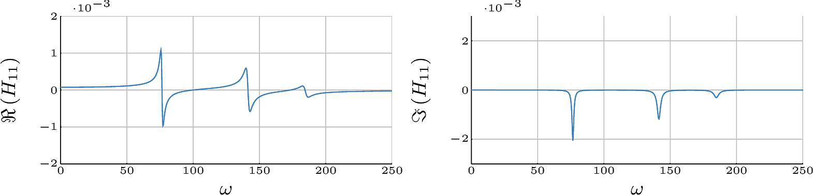
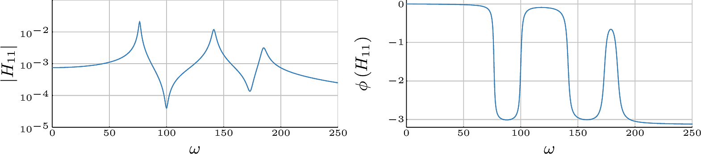
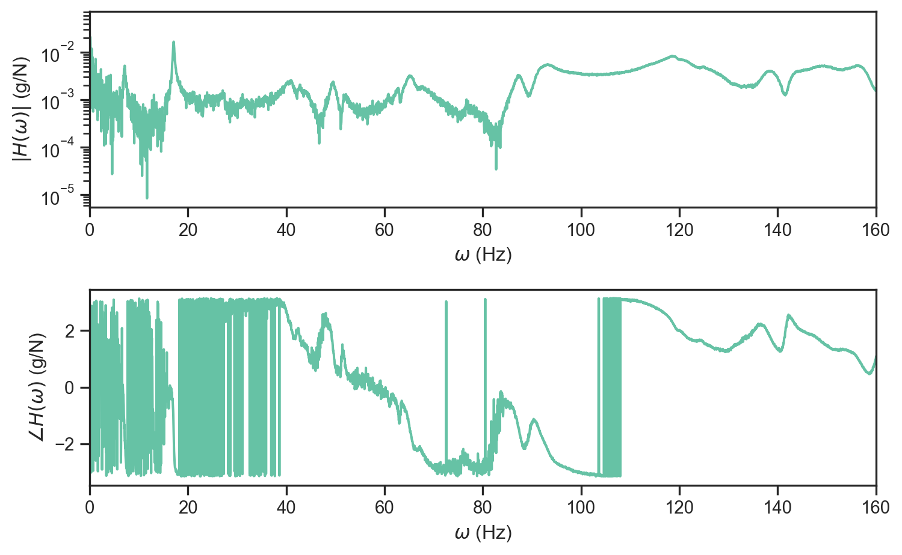
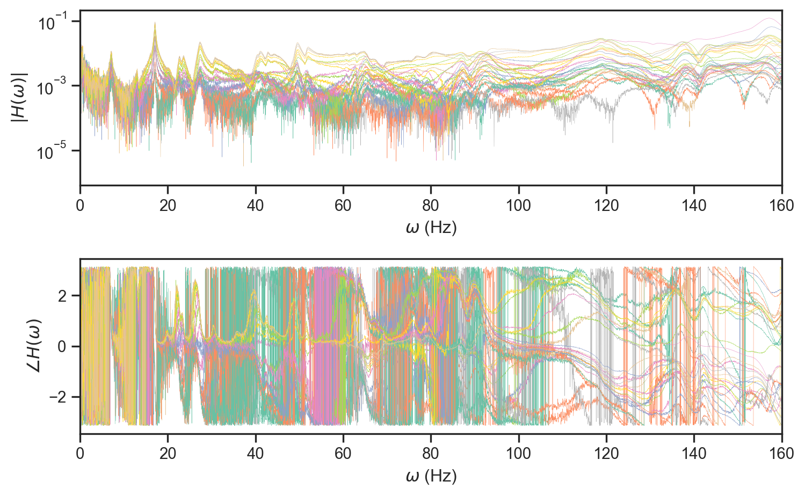

Introduction
Tim Rogers
Max Champneys
Matt Jones
Lizzy Cross
Welcome
Aims for this deep dive:
- Share some challenges from mechanical engineering
- Provide a benchmark problem for you to work on
- Promote some interdisciplinary collaboration
Get stuck-in and hands-on with some data!
Outline For The Day
Today:
- Introduction to the problem setting and challenges
- Tutorial on accessing the data
- Demonstration of some basic approaches:
- System ID
- Damage detection
- Examples of some more advanced things we could do
- Discussion of what you could get involved with
Outline For The Day
| Time | Session |
|---|---|
| 09.00 - 10.30 | Introduction Session |
| 10.30 - 11.00 | Coffee/Tea Break |
| 11.00 - 12.30 | Classical Approaches |
| 12.30 - 14.00 | Lunch |
| 14.00 - 15.30 | SOTA and Future Directions |
| 15.30 - 16.00 | Coffee/Tea Break |
| 16.00 - 17.00 | Discussion |
Rest of the week
- Daily catch-ups to feedback
- We can do some extra details on “advanced” approaches if there is interest
- Develop some nice new technology/ideas
Our Benchmark Dataset
Brief overview:
- Modal vibration test
- ~55 response sensors (accleration)
- Single excitation point
- Various test conditions
- Simulated damage effects
A Bit of Background Theory

A Bit of Background Theory
\[ \newcommand{\identity}{\mathbb{I}} \renewcommand{\vec}[1]{\boldsymbol{#1}} \newcommand{\mat}[1]{{#1}} \newcommand{\transpose}{^\text{T}} \newcommand{\inv}{^{-1}} \]
\[ \begin{bmatrix} m_1 & 0 & 0\\ 0 & m_2 & 0\\ 0 & 0 & m_3 \end{bmatrix}\begin{Bmatrix} \ddot{x}_1\\ \ddot{x}_2\\ \ddot{x}_3 \end{Bmatrix}+\begin{bmatrix} c_1 + c_2 & -c_2 & 0\\ -c_2 & c_2 + c_3 & -c_3\\ 0 & -c_3 & c_3 + c_4 \end{bmatrix}\begin{Bmatrix} \dot{x}_1\\ \dot{x}_2\\ \dot{x}_3 \end{Bmatrix} + \]
\[ \begin{bmatrix} k_1 + k_2 & -k_2 & 0\\ -k_2 & k_2 + k_3 & -k_3\\ 0 & -k_3 & k_3 + k_4 \end{bmatrix}\begin{Bmatrix} x_1\\ x_2\\ x_3 \end{Bmatrix} = \begin{Bmatrix} F_1(t)\\ F_2(t)\\ F_3(t) \end{Bmatrix} \]
\[ M\boldsymbol{\ddot{x}}+C\boldsymbol{\dot{x}}+K\boldsymbol{x} = \boldsymbol{F}(t) \]
Free Vibration Response
Taking the undamped system equation in free vibration, \[ M\boldsymbol{\ddot{x}}+K\boldsymbol{x} = 0 \]
Assuming a harmonic solution \(x_i = X_i \sin (\omega t)\), we arrive at an eigenvalue problem.
\[ \underbrace{M^{-1}K}_A \boldsymbol{X} = \lambda \boldsymbol{X} \]
where, \(\lambda = \omega_n^2\) and \(\boldsymbol{X} = \boldsymbol{\phi}\).
We get some equivalent results with a bit more faff for the damped case.
Forced Vibration Response
Forced Vibration Response
Remember for an SDOF system, the FRF is defined as: \[ H(\nu) = \frac{X(\nu)}{F(\nu)} \]
In the MDOF case there are now multiple responses and forces.
\[ \begin{Bmatrix} X_1\\ X_2\\ X_3 \end{Bmatrix} = \begin{bmatrix} H_{11}(\nu) & H_{12}(\nu) & H_{13}(\nu)\\ H_{21}(\nu) & H_{22}(\nu) & H_{23}(\nu)\\ H_{31}(\nu) & H_{32}(\nu) & H_{33}(\nu)\\ \end{bmatrix}\begin{Bmatrix} f_1\\ f_2\\ f_3 \end{Bmatrix} \]
Forced Vibration Response

Forced Vibration Response

Modal Decomposition
Remember we have, \[\begin{equation*} \mat{M}\vec{\ddot{x}} + \mat{C}\vec{\dot{c}} + \mat{K}\vec{x} = \vec{F} \end{equation*}\]
Substituting \(\vec{x} = \mat{\tilde{\Phi}}\vec{y}\) and premultiplying by \(\mat{\tilde{\Phi}}\transpose\), \[\begin{equation*} \mat{\tilde{\Phi}}\transpose \mat{M} \mat{\tilde{\Phi}}\vec{\ddot{y}} + \mat{\tilde{\Phi}}\transpose \mat{C} \mat{\tilde{\Phi}}\vec{\dot{y}} + \mat{\tilde{\Phi}}\transpose \mat{K} \mat{\tilde{\Phi}}\vec{y} = \mat{\tilde{\Phi}}\transpose\vec{F} \end{equation*}\]
Which gives,
\[\begin{equation*} \identity\vec{\ddot{y}} + \mat{2\zeta\Lambda^{1/2}}\vec{\dot{y}} +\mat{\Lambda}\vec{y} = \mat{\tilde{\Phi}}\transpose\vec{F} \end{equation*}\]
Analysing Large Scale Systems
\[\begin{equation*} H_{jk}(\nu) = \sum_{r=1}^R\frac{\varphi_j^{(r)}\varphi_k^{(r)}}{\mat{K_{rr}} - \nu^2\mat{M_{rr}}+ i \nu\mat{C_{rr}}} \end{equation*}\]
\[\begin{equation*} H_{jk}(\nu) = \sum_{r=1}^R \frac{\tilde{\varphi}_j^{(r)}\tilde{\varphi}_k^{(r)}}{\lambda_r -\nu^2 + 2\nu\lambda_r^{1/2}\zeta_ri} \end{equation*}\]
\(j\) - measurement location \(\checkmark\)
\(k\) - forcing location \(\checkmark\)
\(r\) - which mode we are in \(\checkmark\)
\(\lambda_r\) - \(\omega_r^2\) of \(r^\text{th}\) mode \(\checkmark\)
\(\zeta_r\) - damping ratio of \(r^\text{th}\) mode \(\checkmark\)
Quick Recap On The Aims
Digital Twin
“A virtual duplicate of a system built from a fusion of models and data.” Which can evolve in time and be used to make operational decisions.
Wagg, D. J., Worden, K., Barthorpe, R. J., and Gardner, P. (May 12, 2020). “Digital Twins: State-of-the-Art and Future Directions for Modeling and Simulation in Engineering Dynamics Applications.” ASME. ASME J. Risk Uncertainty Part B. September 2020; 6(3): 030901. https://doi.org/10.1115/1.4046739
Components of Interest
To make this a bit more concrete we need:
- A model of the system we can trust
- The ability to infer important information about the system, e.g. is it damaged/not performing as expected?
- To account for time varying effects in the system
- Methods for making effective decisions based on this information
Tasks for this Deep Dive
| Task | Starting Aim | Stretch Challenge |
|---|---|---|
|
|
|
|
|
|
|
|
|
Identification I
The core task here is to establish a model which can:
- Replicate the dynamic behaviour of the system mathematically
- Provide insight into the physical mechanisms behind the response
- Quantify our uncertainty in the system (perhaps consider if that uncertainty is epistemic or alleatoric)
Identification II
To approach this the common methods would:
- Assume linearity
- Assume “modal behaviour” - i.e. the system can be well described by a subset of its eigenmodes
- Look for deterministic solution
- Assume stationarity
- Consider a discretised version of the system, i.e. ODEs not PDEs
- Adopt a low order model
Identification III
Challenges to try should focus on providing one of (a)-(c) as listed above, for example:
- Developing a low order model of the system as a set of ODEs/PDEs
- Validation of established models for variable conditions applied in testing
- Determining if the system is nonlinear, if so, providing physical models of that nonlinearity supported by data
Prediction
Why do we care about prediction:
- Replicate unseen behaviour of interest
- Explore extreme events or scenarios
- Infer unmeasurable data in operation (virtual sensing)
- Validation of identified models
- Allow for comparison between models
Prediction: Virtual Sensing
In summary we can think of the problem as shown below:
Outstanding questions:
- Minimal required sensors for some bound on the uncertainty/error of the reconstruction
- Which sensors should you use to perform this reconstruction
- Verification/validation across different potentially unseen scenarios
Prediction: Load Estimation
The issue with ambient loads:
- Cannot be controlled for the purpose of system identification
- Cannot be feasibly measured
- Are the major root cause of damage to the structure
Therefore, the task of load estimation is to solve the inverse problem above which recovers the applied loads to the system given only (noisy) observations of the responses (at a subset of locations). The problem is complicated by:
- Noise on the measurements
- Uncertainty regarding the dyanmic system itself
- Lack of full state information, i.e. sparse measurements
Physics-Informed Machine Learning
Problems with using ML:
- Difficulty in extrapolation
- Noisy measurements and hidden states
- Model selection and complexity
- Validation of models
Does including physics help? If so:
- What balance of physics and machine learning is appropriate?
- How does the process for model verification and validation change in physics-informed machine learning?
- Can we provide bounds on the confidence of models with known misspecification away from observed data?
Evaluation
In the evaluation task we would like to understand the condition of the structure. Remembering Rytter’s hierarchy:
In this task we will look at methods that span this set of challenges.
Detection
Simply put, is there damage present on the structure?
Difficulties:
- Varying test conditions can appear as damage
- We assume have never seen damage until it happens
- The effect from damage may be much less but similar to other factors, e.g. nonlinearity
Localisation
Where has damage occurred on the structure?
Difficulties:
- If the effect of damage is unknown this can be hard to localise
- Damage will almost always be appearing in a new location we don’t have examples from
- We would like to localise the smallest possible amount of damage to ensure early action can be taken
Classification
In this setting the classification task would be only to determine the extent of the damage as only one (pseudo)damage type is tested
Prognosis
Ideally we would like to be able to make statements about the effect of the damage on the structure moving forward.
In this case there is no data with which to validate any outputs but we may ask questions like how will particular damage cases impact performance of the asset.
A Very Valuable Output
In the setting of the digital twin it would be highly advantageous to be able to explore different scenarios without having to physically test the structure.
Challenge: Create a generative model of damage.
Parameters of this model may include:
- Damage location
- Damage extent
- Different sensing systems
- Longer term forecasts
Loading Data
We provide a repo of useful tools under hawk_tools
Loading Options I
test_camp
Choice of test campaign from LMS or NI
test_id
Choice of test series:
LMSStandard:BR_ARFSS_ARRSS_ARFLS_ARRLS_AR
LMSPseudo-Damage:DS_TLEDS_CTEDS-RLE
NI:RPH_ARORP_VS
Loading Options II
test_runs
Test run number for this test series, usually 1 to 10, see Test Info
test_reps
Test run repetition number in 1 to 10
download_dir
Location to cache data to when downloaded
disk_only
Boolean indicating if data should be returned from this function or just to attempt download
Loading Options III
ask
The full dataset is quite large >20 GB, if you are about to download a large amount of data you will be prompted to confirm. This setting allows this prompt to be overridden.
load_kwargs
Options for more advanced loading of data from disk, usually to increase speed/reduce RAM usage
quiet
Silence console print outputs of file download progress
Demo
Load a single repetition of a single test
data = hawk_tools.get_hawk_data("LMS", "BR_AR", 1, 1)
print(list(data.keys())) # available datasets
print(list(data["BR_AR_1_1"].keys())) # available sensors in the data
print(list(data["BR_AR_1_1"]["LTC-03"].keys())) # fields per sensorUsing cached version: ./.hawk_data\LMS_BR_AR_1_1.hd5['BR_AR_1_1']
['EXH', 'FRC', 'LLC-01', 'LLC-02', 'LLC-03', 'LLC-04', 'LLC-05', 'LLC-06', 'LLC-07', 'LLG-01', 'LLG-02', 'LLG-03', 'LLG-04', 'LLG-05', 'LLG-06', 'LRT-01', 'LRT-02', 'LRT-03', 'LRT-04', 'LTC-01', 'LTC-02', 'LTC-03', 'LTC-04', 'LTC-05', 'LTC-06', 'LTC-07', 'Meta', 'TRI-X', 'TRI-Y', 'TRI-Z', 'ULC-01', 'ULC-02', 'ULC-03', 'ULC-04', 'ULC-05', 'ULC-06', 'ULC-07', 'ULE-01', 'ULE-02', 'ULE-03', 'ULE-04', 'ULE-05', 'ULE-06', 'ULE-07', 'URT-01', 'URT-02', 'URT-03', 'UTC-01', 'UTC-02', 'UTC-03', 'UTC-04', 'UTC-05', 'UTC-06', 'UTC-07', 'UTE-01', 'UTE-02', 'UTE-03', 'UTE-04', 'UTE-05', 'UTE-06', 'UTE-07']
['Autopower Spectrum', 'Coherence Spectrum', 'Dynamic Stiffness', 'Frequency Response Function', 'Spectra', 'Time Signal', 'assettNumber', 'calibration', 'location', 'model', 'sensor']Plotting an FRF
Code
H = data["BR_AR_1_1"]["LTC-03"]["Frequency Response Function"]["Y_data"]["value"]
w = data["BR_AR_1_1"]["LTC-03"]["Frequency Response Function"]["X_data"]["value"]
H_units = data["BR_AR_1_1"]["LTC-03"]["Frequency Response Function"]["Y_data"]["units"]
fig, axs = plt.subplots(2, 1, figsize=(8, 5))
axs[0].semilogy(w, np.abs(H))
axs[1].plot(w, np.angle(H))
axs[0].set_xlabel(r"$\omega$ (Hz)")
axs[1].set_xlabel(r"$\omega$ (Hz)")
axs[0].set_ylabel(r"$|H(\omega)|$ ({})".format(H_units))
axs[1].set_ylabel(r"$\angle H(\omega)$ ({})".format(H_units))
axs[0].set_xlim([0, 160])
axs[1].set_xlim([0, 160])
plt.tight_layout()
plt.show()
Some More Data Examples
Code
Using cached version: ../.hawk_data\LMS_BR_AR_1_2.hd5Using cached version: ../.hawk_data\LMS_BR_AR_1_3.hd5Using cached version: ../.hawk_data\LMS_BR_AR_1_1.hd5['BR_AR_1_2', 'BR_AR_1_3', 'BR_AR_1_1']Now let’s look at the NI test campaign
Code
Using cached version: ../.hawk_data\NI_RPH_AR_1_1.hd5Using cached version: ../.hawk_data\NI_RPH_AR_1_2.hd5
['RPH_AR_1_1', 'RPH_AR_1_2']
['EXH', 'FRC-01', 'LLC-01', 'LLC-02', 'LLC-03', 'LLC-04', 'LLC-05', 'LLC-06', 'LLC-07', 'LLG-01', 'LLG-02', 'LLG-03', 'LLG-04', 'LLG-05', 'LLG-06', 'LRT-01', 'LRT-02', 'LRT-03', 'LRT-04', 'LTC-01', 'LTC-02', 'LTC-03', 'LTC-04', 'LTC-05', 'LTC-06', 'LTC-07', 'TRI-X', 'TRI-Y', 'TRI-Z', 'ULC-01', 'ULC-02', 'ULC-03', 'ULC-04', 'ULC-05', 'ULC-06', 'ULC-07', 'ULE-01', 'ULE-02', 'ULE-03', 'ULE-04', 'ULE-05', 'ULE-06', 'ULE-07', 'URT-01', 'URT-02', 'URT-03', 'UTC-01', 'UTC-02', 'UTC-03', 'UTC-04', 'UTC-05', 'UTC-06', 'UTC-07', 'UTE-01', 'UTE-02', 'UTE-03', 'UTE-04', 'UTE-05', 'UTE-06', 'UTE-07', 'Meta']
['Measurement', 'Timestamp']Advanced Usage
Code
load_opts = {
"data": "Frequency Response Function", # FRFs only
"meta": False, # do not load metadata i.e test specific data
"attrs": False, # do not load attributes i.e sensor number
"compress_x_axis": True, # add x data as seperate channel (rather than copying to each sensor)
"sensors": None, # Load all sensors
}
data = hawk_tools.get_hawk_data(
"LMS",
"BR_AR",
1,
[1, 2, 3],
load_kwargs=load_opts,
download_dir=outdir)
print(list(data.keys())) # available datasets
print(list(data["BR_AR_1_1"].keys())) # available sensors in the data
print(list(data["BR_AR_1_1"]["LTC-03"].keys())) # fields per sensor
ws = data["BR_AR_1_1"][
"X_data"
] # frequency vector available at the top level of each test nowUsing cached version: ../.hawk_data\LMS_BR_AR_1_2.hd5
Using cached version: ../.hawk_data\LMS_BR_AR_1_3.hd5
Using cached version: ../.hawk_data\LMS_BR_AR_1_1.hd5['BR_AR_1_2', 'BR_AR_1_3', 'BR_AR_1_1']
['EXH', 'X_data', 'FRC', 'LLC-01', 'LLC-02', 'LLC-03', 'LLC-04', 'LLC-05', 'LLC-06', 'LLC-07', 'LLG-01', 'LLG-02', 'LLG-03', 'LLG-04', 'LLG-05', 'LLG-06', 'LRT-01', 'LRT-02', 'LRT-03', 'LRT-04', 'LTC-01', 'LTC-02', 'LTC-03', 'LTC-04', 'LTC-05', 'LTC-06', 'LTC-07', 'Meta', 'TRI-X', 'TRI-Y', 'TRI-Z', 'ULC-01', 'ULC-02', 'ULC-03', 'ULC-04', 'ULC-05', 'ULC-06', 'ULC-07', 'ULE-01', 'ULE-02', 'ULE-03', 'ULE-04', 'ULE-05', 'ULE-06', 'ULE-07', 'URT-01', 'URT-02', 'URT-03', 'UTC-01', 'UTC-02', 'UTC-03', 'UTC-04', 'UTC-05', 'UTC-06', 'UTC-07', 'UTE-01', 'UTE-02', 'UTE-03', 'UTE-04', 'UTE-05', 'UTE-06', 'UTE-07']
['Frequency Response Function']A Quick Look at The Data
Code
data = hawk_tools.get_hawk_data(
"LMS",
"BR_AR",
1,
1,
load_kwargs=load_opts,
download_dir=outdir)
def plot_bode_frf(axs, w, H):
axs[0].semilogy(w, np.abs(H), linewidth=0.2)
axs[1].plot(w, np.angle(H), linewidth=0.2)
fig, axs = plt.subplots(2, 1, figsize=(8, 5))
for k, v in data['BR_AR_1_1'].items():
if 'U' in k:
plot_bode_frf(
axs,
data['BR_AR_1_1']['X_data']['Frequency Response Function']['value'],
v['Frequency Response Function']['Y_data']['value'])
axs[0].set_xlabel(r"$\omega$ (Hz)")
axs[1].set_xlabel(r"$\omega$ (Hz)")
axs[0].set_ylabel(r"$|H(\omega)|$")
axs[1].set_ylabel(r"$\angle H(\omega)$")
axs[0].set_xlim([0, 160])
axs[1].set_xlim([0, 160])
plt.tight_layout()
plt.show()Using cached version: ../.hawk_data\LMS_BR_AR_1_1.hd5
Getting Setup
We provide materials and a setup guide here:
Broadly:
- Setup a venv!
git clone https://github.com/MDCHAMP/INI_hawk_notebooks- Run
pip install -r INI_hawk_requirements.txt - Open notebook
notebooks/01_Hawk_intro.ipynb
What’s Next
- Some theory on analysing dynamic data
- How to extract some useful information from this messy data
- Can that information be used to determine damage?
- Coffee!